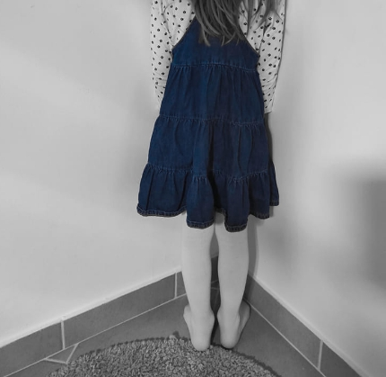
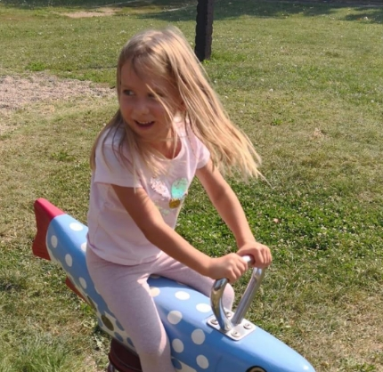
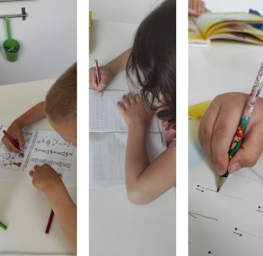
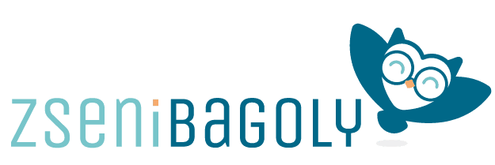

Eredményes szakmai munka
Bizonyított módszerek és személyre szabott fejlesztési tervek minden gyermeknek.
Képzett fejlesztőpedagógusok, logopédusok és mozgásterapeuták várják gyermeked Debrecenben. Személyre szabott, játékos fejlesztés – mert minden gyermek egyedi.
Nem csupán foglalkozásokat kínálunk – valódi partnerei vagyunk gyermeked fejlődésének, a szülőkkel közösen, lépésről lépésre.
Bizonyított módszerek és személyre szabott fejlesztési tervek minden gyermeknek.
Vidám, biztonságos és elfogadó légkör, ahol a gyermek szívesen van.
Gondoskodó, szeretetteljes csapat, akik valóban figyelnek minden gyermekre.
Nem sablonos program – minden gyermek saját fejlesztési tervet kap.
Csoportos felkészítő programunk sikerrel küldi el a gyerekeket az iskolába.
Rendszeres visszajelzés és szülői konzultációk a folyamat minden lépésén.
Széles körű fejlesztési lehetőségek egyéni igények szerint – képzett szakembereink minden gyermeket az egyedi útján kísérnek végig.
Hangok, artikuláció, olvasás és írás fejlesztése. Korai beavatkozással megelőzhető a hosszú távú tanulási nehézség.
RészletekA mozgás az összes tanulás alapja. Testséma, egyensúly és koordináció fejlesztése játékosan.
RészletekSzemélyes fejlesztési terv alapján, a gyermek erősségeire és egyedi szükségleteire épített foglalkozások.
Részletek6-9 éves korosztálynak. 10 alkalmas program félénk, szorongó, szeparációs nehézséggel küzdő gyermekeknek. 90.000 Ft / 10 alkalom.
RészletekMax. 5-7 fős csoportokban, 9 hónapon át, heti 60 perces foglalkozásokkal készítjük fel a gyermekeket az iskolakezdésre.
RészletekLogopédiai, iskolaérettségi és komplex részképesség vizsgálatok – hogy pontosan tudjuk, mire van szükség.
Részletek
Fejlesztőpedagógus & Alapozó mozgásterapeuta
A BagolykaLand Fejlesztő Központ alapítója · 3 gyermek édesanyja
Több mint 15 éve dolgozom fejlesztőpedagógusként és alapozó mozgásterapeutaként. Ez idő alatt több mint ezer gyermekkel és családjukkal dolgoztam együtt – ez a tapasztalat adja az alapját annak, amit BagolykaLandban csinálunk.
Anyaként is megtapasztaltam, milyen az, amikor a szülő nem tudja, mitévő legyen. Éppen ezért valójuk: a fejlesztés nemcsak a gyermekről szól, hanem az egész családról.
Fejlesztőpedagógia, alapozó mozgásterápia, korai fejlesztés.
Szülőknek szóló online kurzusok a ZseniBagoly.hu platformon.
"Minden gyermekben van tehetség – csak meg kell találni az utat hozzá."
Több száz elégedett szülő tapasztalatai alapján – mert a legjobb bizonyíték maga az eredmény.
"Keán nagyon ügyesen, az iskolában jól teljesít. Hozza a sok-sok csillagot. Drága Szandi néninek az üzenet..."
"Köszönöm a sok pozitív támogatást, amit tőletek kaptunk a fejlesztések során. Nagyon sokat segített!"
"Szeretnénk megköszönni Szandi éves lelkes munkáját. Beni gyermekünk az iskola-előkészítőnek köszönhetően félelem nélkül kezdte az iskolát."
Speciálisan tervezett programok, amelyek a fejlesztést a mindennapi életbe is beviszik.
Komplex csoportos fejlesztőprogram, amely egyszerre célozza meg a mozgás, a kommunikáció és az érzelmi fejlődés területeit. Játékos, csoportos formában, szakértő irányítással – egy ernyő alatt minden fejlődési szükséglet lefedve.
BővebbenOnline finommotorika-fejlesztő program, amelyet otthonról is elvégezhetnek a gyerekek szüleikkel együtt. Videós útmutatókkal és rendszeres szakértői konzultációval.
BővebbenSzakértőink rendszeresen írnak a fejlődési mérföldkövekről, praktikus tippekről és a fejlesztés leghatékonyabb módszereiről.

A büntetés tartós pozitív változást nem hoz magával. Mutatjuk, milyen módszerek működnek valóban...
Elolvasom
A mozgásfejlesztés nemcsak a testről szól – szoros összefüggésben van a figyelemmel, a memóriával és az olvasástanulással is...
Elolvasom
A felkészületlenül iskolát kezdő gyermeknél szorongás alakul ki. A felkészült gyermek sikerélményt élhet meg...
Elolvasom
A BagolykaLand szaktudása online is elérhető. A ZseniBagoly.hu platformon Szabó-Varga Alexandra fejlesztőpedagógus video-kurzusaival otthonod kényelméből segítheted gyermeked fejlődését.
Hisptkezelés, figyelemfejlesztés, szorongásoldás, iskola-előkészítés – mind elérhető online, heti 15-20 perc befektetéssel.